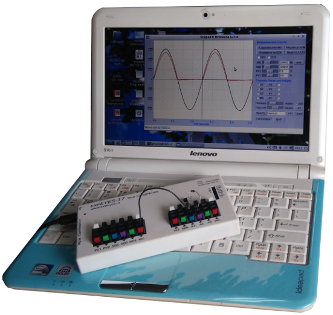

- A
tool for learning science by exploring and experimenting.
- Covers
Experiments at Under Graduate and
Graduate level
- 4
channel Oscilloscope, 1Msps, +/-16V input range
- Sine/Triangular
Wave Generator, 5Hz to 5kHz
- Programmable
voltage sources, +/5V and +/-3.3V
- Frequency
Counter and time measurements.
- Supports
I2C standard sensors
- 12bit
analog resolution.
- Open
Hardware and Free Software.
- Software
in Python programming language.
- get
started with the User Manual
and Videos
- Tested
on Raspberry Pi (deb file)
Available Online
ExpEYES is from the PHOENIX
project of Inter-University
Accelerator Centre,New Delhi. It is a hardware & software
framework for developing science experiments, demonstrations
and projects without getting in to the details of electronics or
computer programming. It converts your PC into a science laboratory.
PHOENIX (Physics with Home-made Equipment and Innovative
Experiments) project was started, in 2005 as a part of IUAC's outreach
program, with the objectives of developing affordable laboratory
equipment and training teachers. Design of ExpEYES
combines the real-time measurement capability of micro-controllers
with the ease and flexibility of Python
programming language for data analysis and visualisation. It
also functions as a test equipment for electronics hobbyists and
engineering students. Software for all products from PHOENIX are
distributed under
GNU General Public License and the hardware designs are under CERN OHL.
The latest version of ExpEYES has been released in Feb-2017. A
User Manual is HERE.
Some videos on ExpEYES17 are on
Youtube.
IUAC conducts training programs
for College teachers every six months and selected candidates are
fully supported. Join the Phoenix
Mailing List to be informed about the Training
Programs and new developments.
We also support "One Day Workshops" organized by colleges by providing
resource persons, for more details on it click HERE.
For information about ExpEYES Junior, released in 2012, click
HERE.
A comparison between
ExpEYES17 and ExpEYES Junior is
HERE.
contact:
Ajith Kumar B P, Inter-University Accelerator Centre, New Delhi 110067,
bpajith at gmail.com